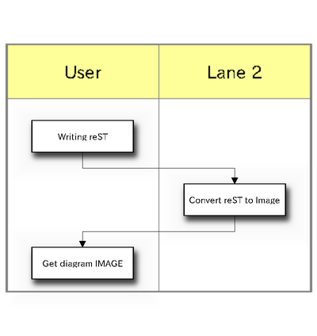

actdiag generate activity-diagram image file from .diag file. .diag file is similar to DOT file (graphviz’s).
You can get diagrams like this.

Introduction of actdiag
Enter search terms or a module, class or function name.